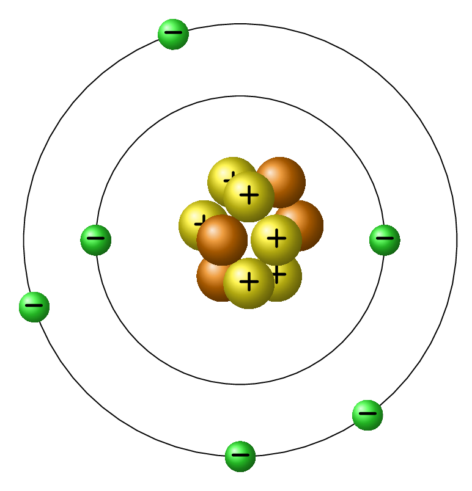

It is a branch of physics which deals with the charge at rest. Ancient Greeks discovered that when silk is rubbed with amber (a dry tree resin) then both gain the attractive property and attract lightweight small particles. Rubbing glass rod with silk, glass rod becomes +vely charged, and silk becomes -vely charged. Rubbing rubber rod or ebonite rod with fur provides +ve charge to fur and -ve charge to rubber. When two things are rubbed together charge can transfer from one object to another which alters the charge neutrality of materials and gives rise to attractive or repulsive property in the materials. Electrostatic is a phenomenon that arises due to force between the charges. These forces can be determined by Coulomb’s law. It has been inferred from many experimental evidences such as Farady’s law of electrolysis, Milikan’s oil drop experiment, pair production, and pair annihilation that charge is a fundamental property of elementary particles that make up the matter and the smallest possible charge that can acquire on a material is a charge of an electron. The basic properties of charge are given as -
Charge is quantized, i.e., charge on any material is an integral multiple of charge on an electron. If Q is the total charge on a material and \(q=e\) is the charge of an electron then,
where \(N_e=1,2,3,\cdots\) is number of electrons and \(q_e =e =1.6\times10^{-19}\) Coulombs is charge on an electron;
Charge is conserved, i.e., in an isolated system the total charge remains unchanged. In a pair production a photon disappears by producing two equal and opposite charges, also in pair annihilation an electron and a positron disappear in producing a chargeless photon, e.g.,
Note that positron is identical to electron except that it has an opposite charge;
Charge is of two kinds, a positive charge and a negative charge; [Like charges repel each other and unlike charges attract each other], and
Charge is scalar in nature.
Definition1.0.1.
Charge is that physical entity which provides a material an electrical property.
It determines how particles interact with each other through electromagnetic forces.
Atomic Structure: All substances are made up of atoms and every atom consists of nucleus at its core which is surrounded by fast revolving electron/s (Figure 1.0.2). The nucleus consists of two different types of elementary particles, protons and neutrons. Protons and neutrons together are called nucleons as they reside inside a nucleus. Neutron does not have any charge but proton has positive charge. Charge on proton and electron is same but opposite in nature. Since nucleus has \(+ve\) charge and electron has \(-ve\) charge the net charge on an atom is zero. Mass of proton is nearly same as the mass of neutron but electron is much less massive in comparison to them. Table 1.0.3 summarizes the relative mass, actual mass, and charge on proton, neutron, and electron. Total number of protons present in a nucleus is called an atomic number. In an atom,

Figure1.0.2.
the number of protons = the number of electrons.
Table1.0.3.
Particle
Proton
Neutron
Electron
Actual Mass
\(1.672\times10^{-27}\,kg \)
\(1.675\times10^{-27} \,kg\)
\(9.109\times10^{-31}\,kg \)
Relative Mass
\(1\)
\(1\)
\(0.0005 (\sim zero) \)
Actual Charge
\(1.602 \times 10^{-19} \,C\)
\(0 \)
\(1.602 \times 10^{-19} \,C\)
Relative Charge
\(+1\)
\(0\)
\(-1\)
Since electron is extremely light weight, the mass number of an atom is the sum of relative mass of protons and neutrons, i.e., \(A = Z + N,\) where A is mass number, Z is atomic number, and N is number of neutrons. The mass number is a total relative mass of an atom. The isotropic notation of an atom is given by \({}_{Z}^{A}X,\) where X represents an atom of the element. An element is basic building blocks of any substance that stores its basic properties. Element can not be broken down to further simpler form that still retains the material properties. An element is composed of atoms.
On the basis of electrical behavior there are four types of materials exist in nature they are conductor, insulator, semiconductors, and superconductors.
Conductor: It is a material where charge carriers (electrons or ions) are free to move within it. Copper, aluminum, gold, mercury, iron, water-salt solution, etc. are few examples of conductors. In a conductor outermost electrons of an atom are loosely bounded with its nucleus and hence are free to move throughout the material even at very low temperature. The random motion of electrons causes zero net electric current in a conductor unless an external electric field is applied on it.
Insulator: It is a material where electrons are tightly bounded with their atom and can not move very easily. Plastics, glass, rubber, wood, porcelain, etc. are few examples of insulators. Dielectrics are insulators which allow the specific gravity of charges to displace a little bit so that it can store an electrical energy when applied to a high electric field.
Semiconductor: It is a material having properties between insulator and conductor. Silicon and germanium are good example of it. At low temperature this material behaves as an insulator and at high temperature it behaves as a conductor. The conductivity of semiconductor can be increased enormously by doping of this material with a very small amount of suitable dopants such as boron, phosphorous, or arsenic.
Superconductor: It is a material which transfers electrons from one atom to another throughout the material without any resistance. No loss of energy can be observed when material conduct electricity. Mercury shows superconducting nature at temperature below 4 Kelvin.